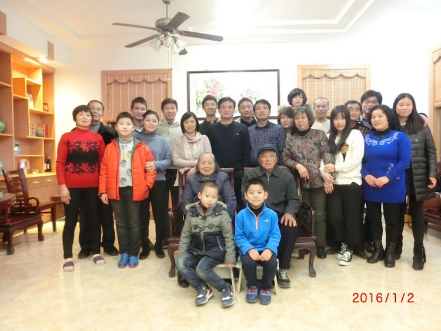

{{article.title}}
A couple weeks ago I went to china and I wanted to write an article about it and what I found interesting about it. Although the trip was long had many curious quirks overall, I greatly enjoyed the trip.
First lets make clear that I was not alone on this trip. I went with my immediate family, namely my mom, my dad and chris, my younger brother. Below is a picture of my family at WaiTan, Shanghai, China.

I will break this article into 3 parts -- namely, family, china's rapid development, and miscellaneous.
During china I spent a lot of my time with my extended family, as my parents are my only family members that left china, I rarely get to see my extended family. My family can be broken into my mom's side and my dad's side. Here are pictures of both sides.
Another thing I wanted to say related to my extended family, that I felt particularly poignant is the distance I feel now looking back I have between the rest of my family as we live on seperate contacts and rarely communicate. There are language barriers and cultural boundaries that are astounding. China's lifestyle and environment is enormously different from America's. I at the same time want to reconnect with my extended family, but also I want break free and forge my own lifestyle. I definetely identify more with America and western values but I also want better connect.

Moving on to the next topic china's rapid development. China has definetely developed astoundingly crazy. I noticed 3 things in particular about this development. First is the pollution. Even in Shanghai which has relatively low pollution compared to northern china there is a haze filling the sky. The sun is always slighly blocked and you can often look at it without any problems. Also the air feels heavier to breath, if you take a deep breath something feels wrong in the lungs. Second is the traffic, number of cars and simply the huge number of people. China or atleast shanghai simply has too many people. Every building is atleast 8 stories tall. Every street has shops that sell a strange collection of objects and food blending to make an oily, spicy, soy-saucy, smelly-tofu-like, smell that is honestly quite unpleasant and way to pungent for my liking. If you get seperated from your family you better have a phone as you are never going to be found again. The last hazard that has to do with the number of people is the transportation of these people is astounding. I feel that cars have a special meaning in china. Everyone wants a new car and there are simply too many cars on the road. The public transportation is good but again there are too many people. In rush hour don't expect to move anywhere. My third and final observation is the abundance of scams. Every non-necessity store's prices are crazy and almost every non-necessity item is likely a scam. Be very careful spending your money and make sure you are familiar with what you are buying and how much you spend. As there are so many people in china and living in shanghai is so pricy chinese people are very crafty with scams.

Lastly miscellanious, I wanted to take talk about 2 rather miscellanious topics that I will probably work on creating short data analysis / random fact articles and projects about in the following weeks. First I want to analyze car accidents in shanghai or other countries. I realized in my short time in china that driving traffic and etc is crazy in china. I mean the proximity of cars and the practices of drivers is simply crazy. Yet I didn't see a car accident. In America car accidents are constant. Is there a difference between the two systems and why does this occur? Second higher education and education systems around the world. I wanted to look what college is like in other countries and what education is like in other countries. Why is American high education(college / grad school) ranked best, yet America education system overall and other metrics is America's education system failng? As I just finished college I feel this topic is particularly poignent and I am going to look into it.